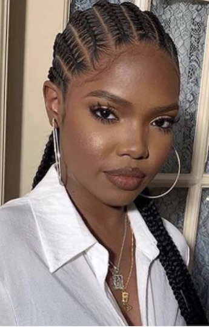
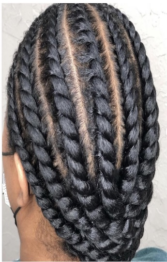

Natural Hair
1 / 6

Cornrows
2 / 6

Wash and Go
3 / 6

Flat Twists
4 / 6

Curly Afro
5 / 6

Two Strand Twists
6 / 6

Silk Press
The relationship that Black women have had with their hair has been a complex one. Due to the layers of that relationship it has become necessary to try to provide a bit of information on the subject.
Natural Hair is a wide and varying subject and it would be impossible to cover every aspect here. So the purpose of this website is to touch briefly on a few sub-topics with the hope that it will spark an interest in others to want to learn more. The following areas of Natural Hair will be explored:
- History of Natural Hair
- The Science of Hair
- Products For Natural Hair
- Popular Natural Hair Styles
- Statistics About Natural Hair